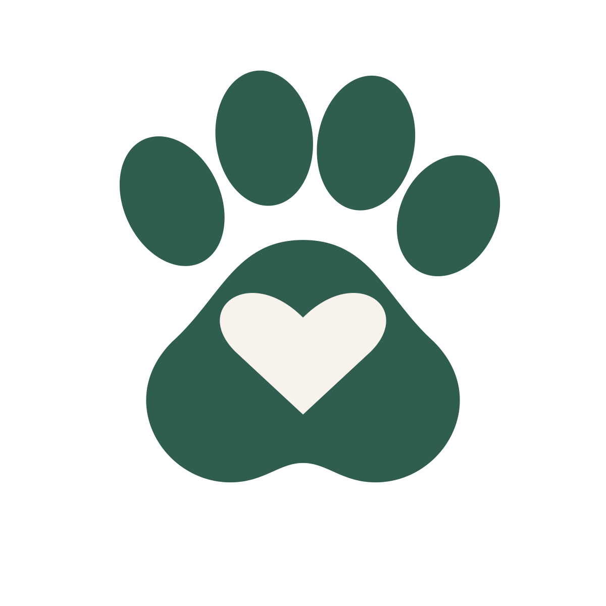
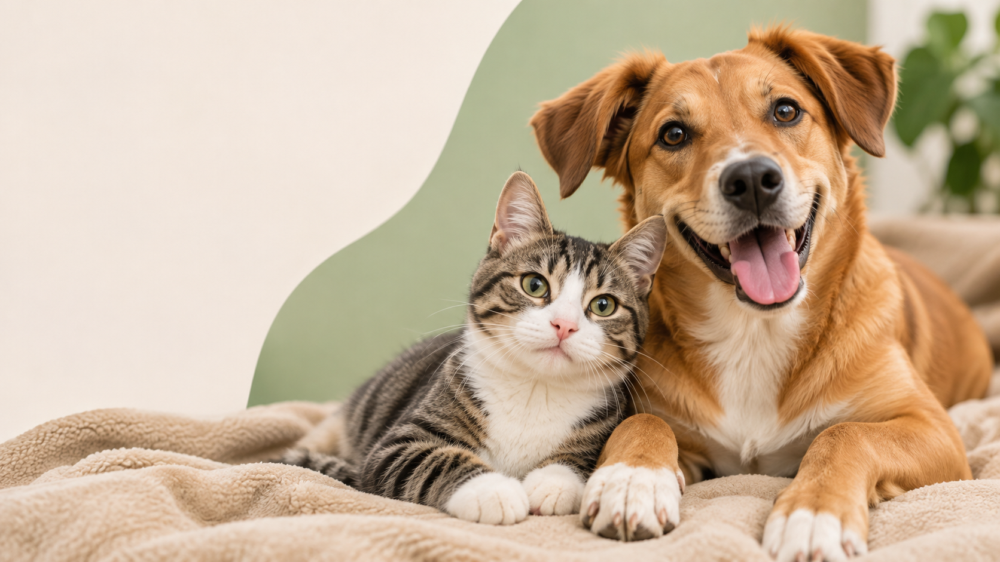

Encuentra mascotas
Explora perros y gatos que buscan un hogar.
Adopción responsable
Conoce a tu próximo compañero y dale una segunda oportunidad.


Explora perros y gatos que buscan un hogar.
Infórmate y adopta de forma consciente.
Publica mascotas y ayuda a más animales.
PetMatch CR es un proyecto académico creado para mostrar cómo una página web puede ayudar a dar visibilidad a mascotas que buscan un hogar. Nuestro propósito es reunir información clara sobre cada mascota y promover decisiones de adopción responsables.
Adoptar implica ofrecer tiempo, alimentación, atención veterinaria, cariño y un espacio seguro. Antes de elegir una mascota, es importante considerar sus necesidades, la convivencia familiar y el compromiso de cuidarla durante toda su vida.
Revisa sus fotografías, características, edad, tamaño e información disponible antes de decidir.
Explorar catálogoPiensa en el tiempo, los cuidados y los recursos que necesitará tu nuevo compañero.
Consulta el formulario de demostración y conoce cómo se representan las solicitudes y sus estados.
Ver formularioPor ahora, PetMatch CR es un prototipo universitario. Todavía no tenemos un correo, teléfono, Facebook o Instagram oficiales confirmados para publicar aquí. Esos datos se agregarán cuando el equipo defina sus canales de contacto.
Explora las mascotas de ejemplo y descubre las características de cada una.
Ver mascotasConsulta las pantallas de registro de usuarios y publicación de mascotas de nuestro prototipo.
Crear cuenta de pruebaCorreo, teléfono, Facebook e Instagram: por confirmar.
Este sitio no procesa adopciones reales. Usa información ficticia en los formularios de prueba.